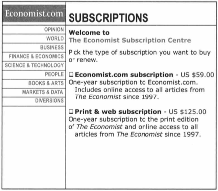

If you consider 2 options, A and B, with similar be benefits people can have a hard time choosing between them. Introducing a 3rd option A-, which i almost like A but slightly worse, makes people choose option A more often.
1. Internet-only subscription for $59 — 68 students 1. Print-and-Internet subscription for $125 — 32 students
"we not only tend to compare things with one another but also tend to focus on comparing things that are easily comparable—and avoid comparing things that cannot be compared easily"
| Space | Forward |
|---|---|
| Right, Down, Page Down | Next slide |
| Left, Up, Page Up | Previous slide |
| P | Open presenter console |
| H | Toggle this help |